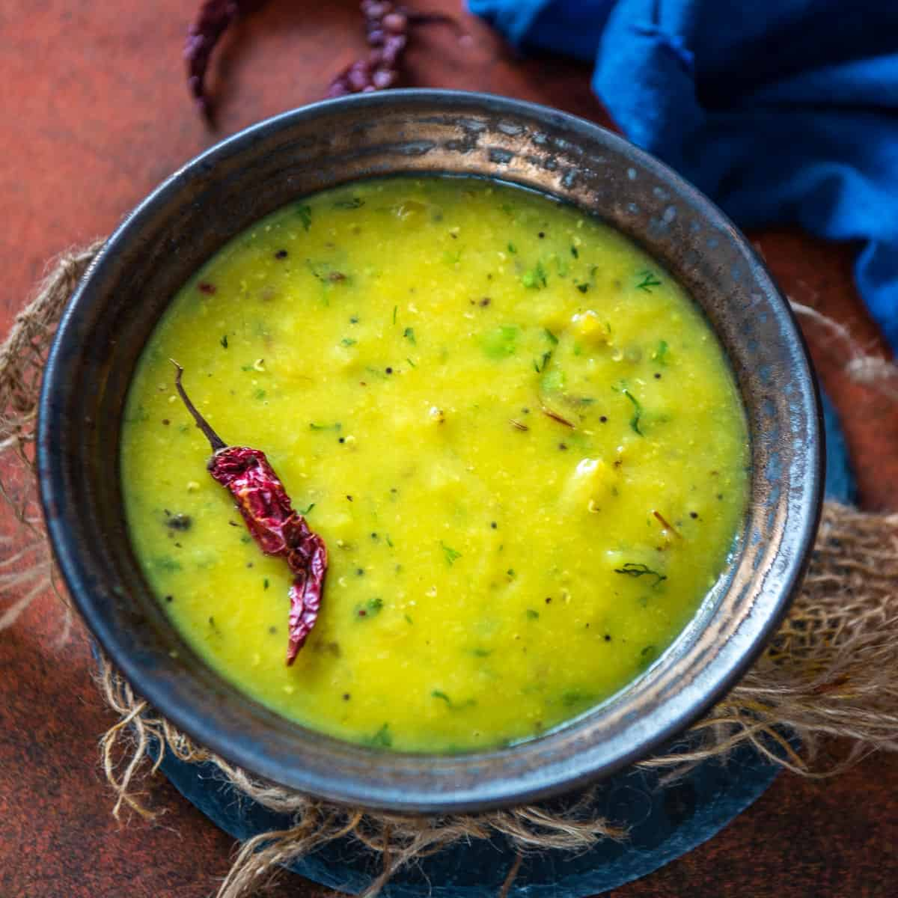

Masoor Dal Recipe

Healthy, delicious, and fully customizable!
Indian-inspired lentils the whole family will love and babies, too. Once the dal and rice are at the desired
consistency, it's ready to eat or freeze. Make sure mixture is completely cool before freezing. I use freezer ice trays
and small individual glass bowls with lids.
Ingredients
- 1 cup basmati rice
- 4-1/2 cups water
- 1 cup red lentils (masoor dal) - rinsed
- 1/2 cup finely chopped red onion (optional, but... why not?
- 1 teaspoon ground cumin
- 1 teaspoon ground coriander
- 1 teaspoon salt (give or take for taste)
- 1/2 teaspoon black pepper (optional)
- 1/2 teaspoon cayenne powder (optional)
- 1/2 teaspoon ground turmeric
- 1 cup broccoli florets (optional)
- 1 cup diced tomatoes (optional)
- 1 cup frozen peas (optional)
- 1 tablespoon olive oil (or as needed)
- 1 cup sliced mushrooms (optional)
- 1 tablespoon peeled, finely grated ginger
- 2 cloves garlic, finely grated
Steps
- Rinse rice in several changes of water and transfer to a container. Cover with water and let soak at room temperature,
15 minutes to 1 hour. Drain.
- Combine 3 cups water with red lentils in a large pot over medium heat. Bring to a simmer, skimming any scum that
collects on the surface. Stir in onion, cumin, coriander, salt, black pepper, cayenne, and turmeric. Reduce heat to low
and simmer, partially covered, until lentils are tender, about 30 minutes.
- Stir broccoli, tomatoes, peas, and salt into the pot. Continue cooking, stirring frequently, until lentils are soft,
about 30 minutes more.
- Combine drained rice with remaining 1 1/2 cup water in another pot; bring to a boil. Reduce heat to very low and simmer,
covered with a tight-fitting lid, until rice is tender and liquid is absorbed, about 20 minutes.
- Heat oil in a small skillet over medium heat. Add mushrooms, ginger, and garlic; cook and stir until fragrant, 3 to 5
minutes. Pour over lentils; stir to distribute. Cook lentils until flavors combine, about 5 minutes. Serve lentils with
rice.
- NOM NOM NOM